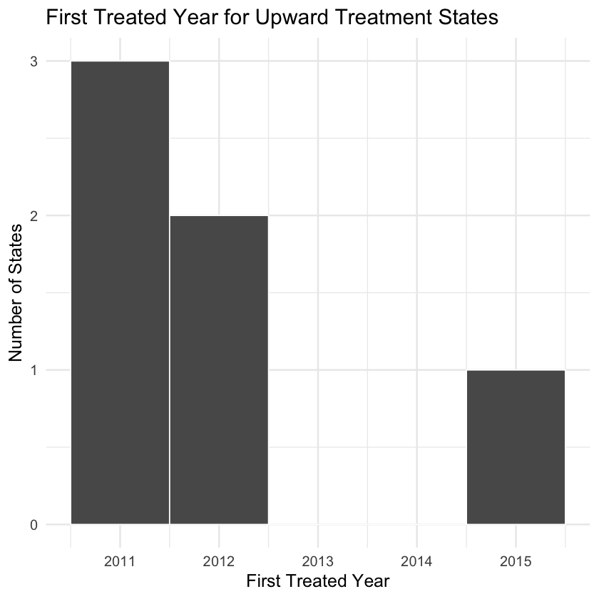
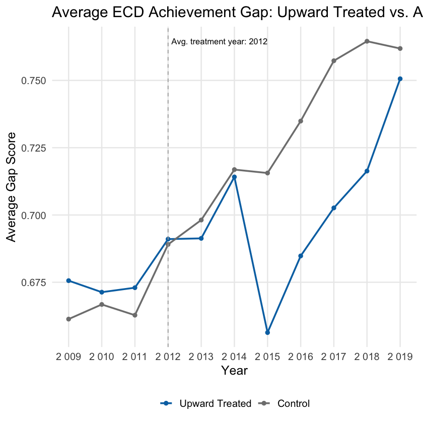
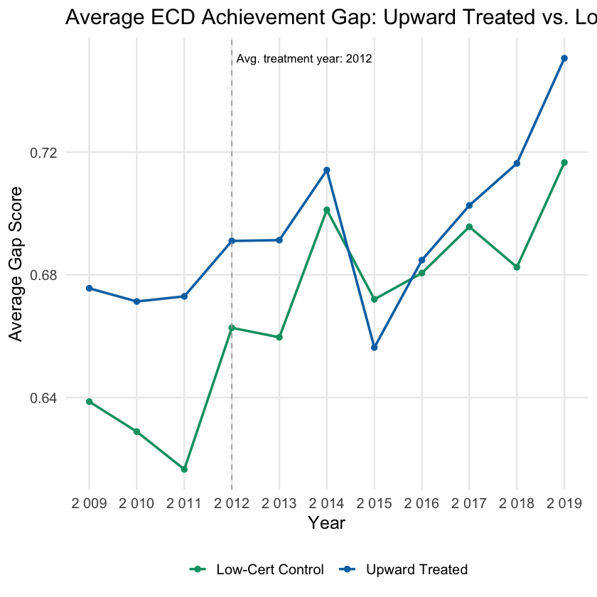

Project Overview
This thesis asks whether state choices about SNAP certification length are associated with changes in educational inequality. Certification length determines how often households must re-prove eligibility to keep benefits, making it a concrete policy lever for studying administrative burden.
The project combines USDA SNAP policy data, USDA participation-rate estimates, and Stanford Education Data Archive outcomes in a state-year panel. The main empirical strategy is a difference-in-differences design with state and year fixed effects.
-0.045
Main DiD estimate for the economic disadvantage achievement gap.
-0.038
Sensitivity estimate using low-certification control states.
419
State-year observations in the main achievement-gap model.
Literature Review Highlights
The literature review builds the bridge from SNAP administration to children’s academic outcomes. The key idea is that public benefits do not only matter through benefit size; they also matter through whether eligible households can maintain stable access.
SNAP Stabilizes Household Resources
SNAP reduces poverty depth and material hardship, especially for households with children, by expanding food-purchasing resources and freeing scarce income for other needs.
Administrative Burden Shapes Access
Learning, compliance, and psychological costs can keep eligible households from accessing or maintaining benefits, even when they formally qualify.
Recertification Creates Procedural Risk
Shorter certification periods expose households more often to paperwork, interviews, deadlines, and the possibility of losing benefits for procedural reasons.
Instability Can Reach Children
Prior research links SNAP timing and household resource stability to student performance, suggesting that benefit instability may affect learning conditions.
Policy Variation
Treatment is defined as a meaningful upward increase in average certification length relative to a state’s baseline. The plots below show how the policy change appears across treated states and where treatment timing falls across the study period.
Certification Length by Treatment Group

First Treated Year

Main Finding
Longer certification periods are associated with reductions in the economic disadvantage achievement gap. The preferred model estimates a 0.045 standard deviation reduction after upward certification-length treatment. A narrower comparison using low-certification control states produces a similar 0.038 standard deviation reduction.
| Model | Estimate | Std. Error | p-value | Observations |
|---|---|---|---|---|
| Main DiD | -0.045 | 0.018 | 0.017 | 419 |
| Low-certification controls | -0.038 | 0.017 | 0.040 | 182 |
Achievement Gap: All Controls

Achievement Gap: Low-Certification Controls

Mechanism Check
The participation-rate models are directionally consistent with the administrative-burden mechanism, but less conclusive than the achievement-gap results. Certification length is positively associated with participation in the fixed-effects model, while the treatment DiD estimate is positive but not statistically significant.
| Participation Model | Estimate | Std. Error | p-value |
|---|---|---|---|
| Certification length | 0.729 | 0.371 | 0.055 |
| Post upward treatment | 2.195 | 2.838 | 0.443 |
SNAP Participation Pre-Trends

SEDA Score Pre-Trends

Featured Code
The core model uses state and year fixed effects with state-clustered standard errors. This setup compares changes within treated states after certification length increases to changes in control states over the same years.
fe_gap_model_final <- feols(
gap_score ~ treated_post | stateabb + year,
data = cert_seda_df_extended %>% filter(year >= 2010),
cluster = "stateabb"
)Interpretation
The results suggest that SNAP administrative design may have downstream implications for educational inequality. Because treatment is not randomized and the data do not identify SNAP-recipient students directly, the findings should be read as evidence consistent with an administrative-burden channel rather than definitive proof of causation.